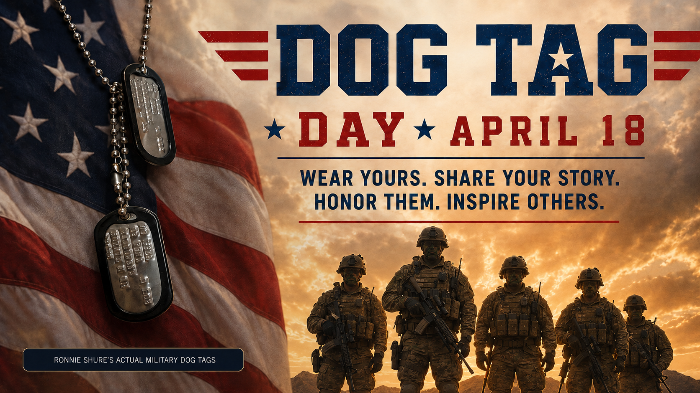
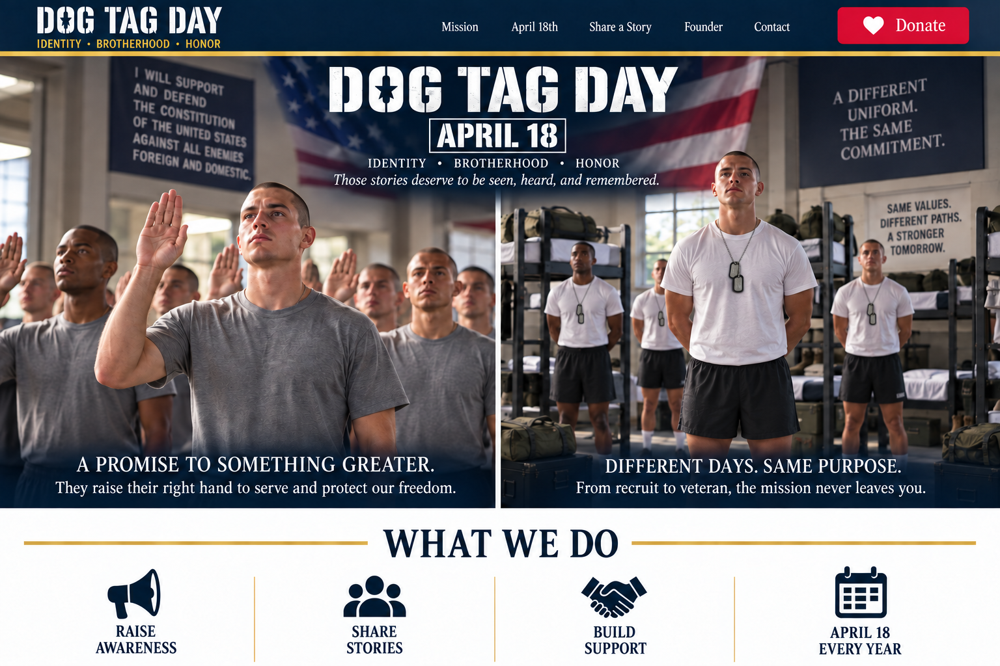

1. We listen.
We start with the veteran—not a form. What do they need? What have they already tried? What is getting in the way?


Helping veterans is at the heart of Dog Tag Day. Our goal is to listen, help veterans find the right support, and stay connected as they take the next step.
We’re building a year-round veteran support program. Sharing stories and bringing communities together on April 18 support that purpose.



A veteran may need help with benefits, food, housing, transportation, employment, home repairs, legal assistance, or simply finding the right organization to call. Dog Tag Day Foundation is building a year-round support program designed to make that process easier.
We start with the veteran—not a form. What do they need? What have they already tried? What is getting in the way?
We identify established veteran, nonprofit, government, and community services that fit the need.
We help the veteran understand the next step and where to go.
We check back. Did they reach someone? Was the problem solved? If not, we help identify another path.
With permission, we share their stories and bring communities together every April 18 so service does not disappear when the uniform comes off.
We’re building this program; it is not yet an operating support service. Our planned role is connection and follow-up. We do not currently provide direct financial aid, housing, or counseling.
Dog Tag Day began with one realization: too many veterans become invisible once the uniform comes off. Dog Tag Day exists so veterans can be seen while they are still here to tell us who they are, where they served, who they remember, and what their service meant.

Your gift helps Dog Tag Day Foundation build a year-round veteran support program focused on listening, connecting veterans with established services, and following up. This program is in development.
Help us turn recognition into practical support.
Help build the process for listening to veterans, identifying relevant services, and following up.
Help us share veterans’ stories with permission and build community participation around their experiences.
Support outreach and materials that bring communities together to recognize veterans.
A respectful request to bring national attention to April 18 and to veterans whose service can become less visible after the uniform comes off.
Read the Open LetterThis is a Dog Tag Day Foundation communication. No government endorsement or response is implied.
 HONOR JARKEEP THEIR STORIES VISIBLE
HONOR JARKEEP THEIR STORIES VISIBLE